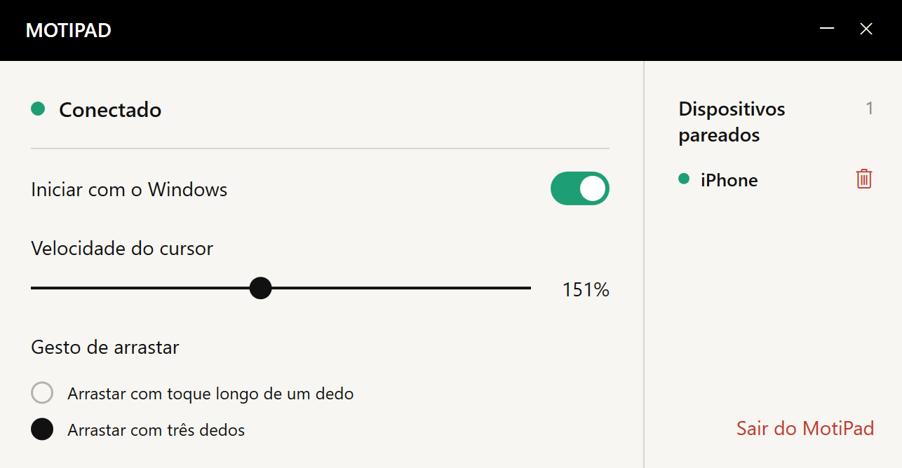

MENOS ESPAÇO
Sem espaço para o mouse?
Seus dedos ainda podem se mover.
Não é preciso liberar uma superfície para o mouse. Deslize os dedos pela tela do celular para mover o cursor do computador.
Menos espaço. Um acessório a menos.
Seus gestos de sempre, direto no iPhone.


Uma mesa de café, um cantinho de trabalho improvisado ou um dia para levar menos coisas. Leve o touchpad no iPhone que já está com você.
Não é preciso liberar uma superfície para o mouse. Deslize os dedos pela tela do celular para mover o cursor do computador.
Prefere deixar o mouse ou o touchpad em casa? Dê mais uma função ao iPhone que você já carrega.
Mova, toque e role com dois dedos.
Uma superfície simples para manter o foco na tarefa.
Está levando um arquivo até o outro lado de uma tela grande e chegou à borda do celular? Levante o dedo por um instante, coloque de volta e continue.
Pareie os computadores que você usa e escolha qual controlar no menu do celular. Mude de local de trabalho e continue.
Adicione seus computadores à lista de pareados.
Troque o computador controlado pelo menu.
Controle um computador de cada vez.
Abra o MotiPad e use a tela do celular para mover, rolar e arrastar.
Instale o receptor e faça o pareamento na mesma rede local. Ajuste a velocidade do cursor e os gestos de arraste no computador.
Baixe e instale o receptor para Windows para usar com o MotiPad no seu iPhone. O link da App Store será adicionado após o lançamento.
Dúvidas, problemas ou sugestões para o produto? Envie um e-mail.
eziojobs01@gmail.com